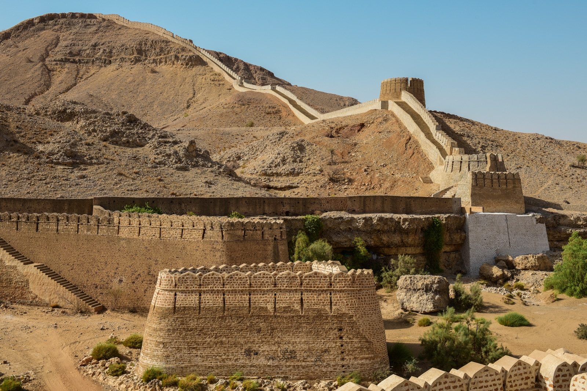
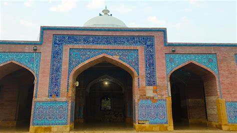
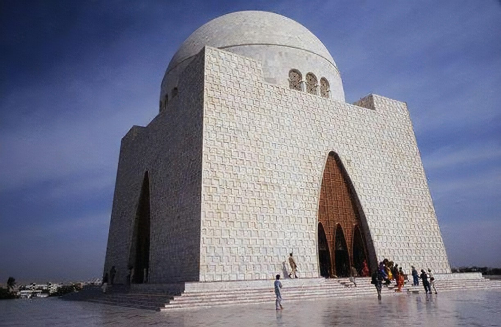
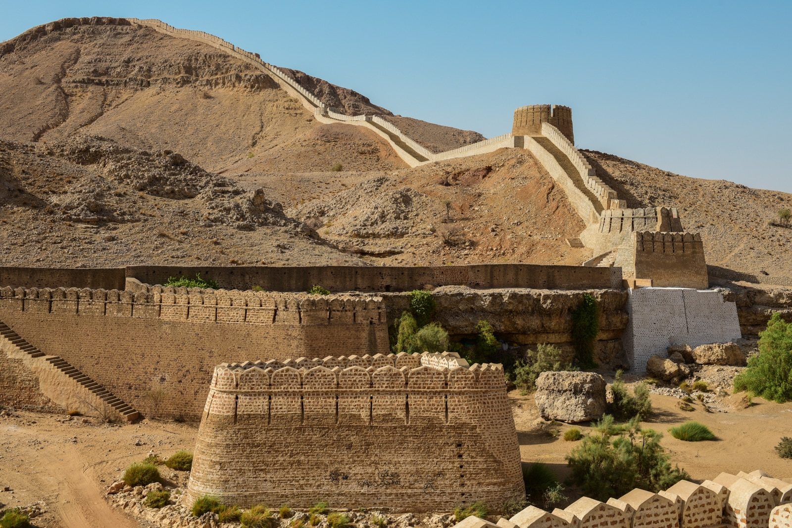
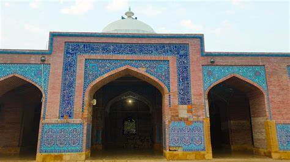
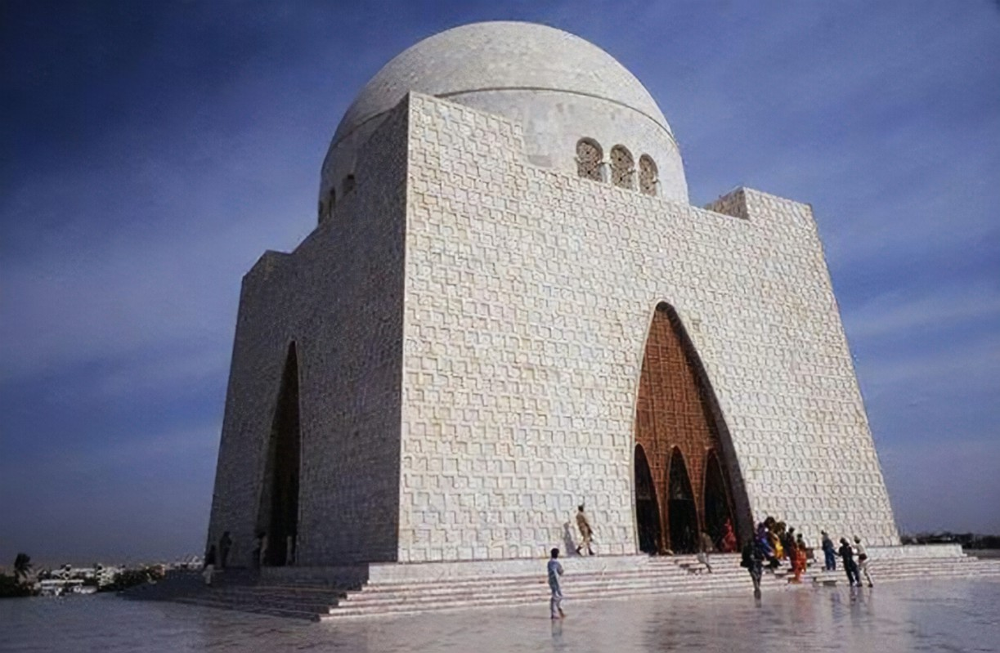

Sindh Province
The Land of Indus Civilization
Capital
Karachi
Largest City
Karachi
Population
47.89 Million
Area
140,914 km²
History and Culture
Sindh has been the cradle of civilization, home to the ancient Indus Valley Civilization. The region has a rich cultural heritage that spans over thousands of years.
Geography
Sindh is bordered by Balochistan province to the west, Punjab province to the north, the Indian states of Gujarat and Rajasthan to the east, and the Arabian Sea to the south.
Economy
The economy of Sindh is the second largest in Pakistan. Karachi, its capital, is the country's largest city and financial hub.
 





Major Districts
- Karachi
- Hyderabad
- Sukkur
- Larkana
- Mirpurkhas